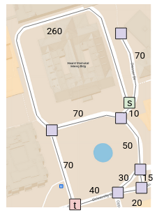
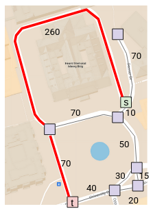
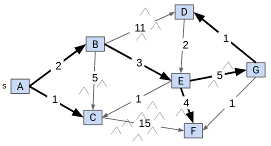
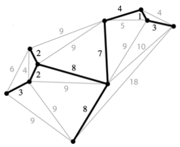
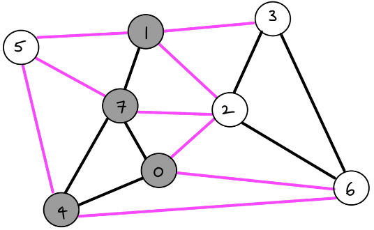
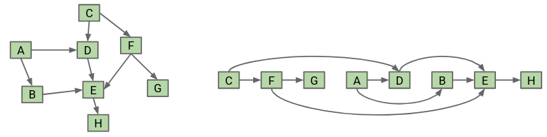

Graphs
Table of Contents
1. Tree Traversals
Sometimes you wish to iterate over a tree. Such an iteration is known as tree traversal. Unlike iterating over an array, there are several different ways to traverse a tree. We define visiting a node as applying some action at the node (for example, printing the key).
1.1. Level Order Traversal
The idea behind this is simple: we iterate through each level of the tree, visiting all of the nodes in that level from left to right.
1.2. Pre-order Traversal
The steps for pre-order traversal are:
- Start at the root. Visit the root.
- If there is a left child, go left and recurse.
- Otherwise, go right and recurse.
1.3. In-order Traversal
The steps for in-order traversal are:
- If there is a left child, go left and recurse.
- Otherwise if there is no left child, visit the node.
- If there is a right child, go right and recurse.
In other words, here we first go down the left branch, and then we print:
1.4. Post-order Traversal
The steps for post-order traversal are:
- If there is a left child, go left and recurse.
- Otherwise if there is a right child, go right and recurse.
- Finally, visit the node.
2. Graph Traversals
2.1. Depth First Search (DFS)
Depth first search explores a neighbor’s subgraph completely before moving on to the next neighbor. In this way, it is called “depth-first” because you go as deep as possible for each path:
The runtime of depth-first search is \(\Theta (V+E)\), where \(V\) is the number of vertices and \(E\) is the number of edges.
2.2. Breadth First Search (BFS)
Breadth first search explores each child first before moving on, similar to the level search for trees:
2.3. Adjacency Lists
We also need a data structure to represent our graph in code. An adjacency list is an array where each index is a vertex number. Then, each element in the array is a list representing all of the vertices adjacent to that particular vertex.
2.4. Pathfinding with DFS versus BFS
DFS and BFS both gets the job done, but which one is more efficient at doing so?
DFS is worse for spindly graphs, as the call stack gets very deep. On the other hand, BFS is worse for absurdly bushy graphs, as the queue gets very large.
3. Shortest Paths
3.1. Shortest Paths Problem
Say we want to find the shortest path between some vertex and every other vertex. To do so, we can utilize BFS.
We first initialize a queue with the starting vertex. Then, we repeat the following steps until the queue is empty:
- Dequeue a vertex
vfrom the queue. - For each unmarked neighbor
nof that vertex, mark the neighbor and add it to the queue.- Set
edgeTo[n] = v. - Set
distTo[n] = distTo[v] + 1.
- Set
3.2. Shortest Paths Tree
In the real world, however, different edges have different weights. For example, if we model a real-world map as a graph, longer paths should have higher weights:

The problem is that since our BFS implementation doesn’t consider these weights, we get the wrong result:

Say we want to consider the union of the shortest path from some source vertex to every other vertex:

We observe that the solution will always be a tree. This is known as the shortest paths tree (SPT) of a graph. The SPT of a graph will store the edges connecting each node (edgeTo) as well as the distance of each node from the source (distTo).
4. Relaxation
One common approach to find the shortest path of a weighted graph involves starting from an incorrect SPT and making improvements until the SPT is correct. One common way to make improvements is known as edge relaxation.
Say we have an incorrect SPT. Then, relaxing an edge from vertex v to neighbor n means that we recalculate the distance from n to the source by using the edge from v to n instead. If it is shorter, we replace the old distance with the new, shorter distance:

4.1. Dijkstra’s Algorithm
The idea behind Dijkstra’s algorithm is that we visit vertices in closest first order, building the SPT as we go. Visitng nodes in closest first order means that instead of using a queue like we did for BFS, we use a priority queue, prioritizing weights that are smaller (paths that are shorter).
First, we insert all of the vertices of our graph into the priority queue. Their starting weights will be infinity, since we don’t know of any path to any of them yet. Then, repeating until the queue is empty, we remove the closest vertex from the priority queue and relax all edges pointing from that vertex, modifying distTo and edgeTo as necessary:
5. Minimum Spanning Trees
Given an undirected graph \(G\), a spanning tree \(T\) is a subgraph of \(G\), where \(T\) is a tree and it includes all of the vertices of \(G\) (this makes it spanning):

A minimum spanning tree (MST) is a spanning tree of minimum total weight (if edges in the graph are weighted).
5.1. Cut Property
A cut is an assignment of a graph’s nodes to two non-empty sets. A crossing edge is an edge which connects a node from one set to a node from the other set:

The cut property states that given any cut, the minimum weight crossing edge must be in the minimum spanning tree.
5.2. Prim’s Algorithm
We start from some arbitrary start node. Then, out of all the edges that has one node inside the current MST, we add the shortest one to the MST. Repeat this until we get \(V-1\) edges:
Prim’s works because if we consider all the nodes connected to the start node as one side, and all the other nodes as the other side, the cut property tells us that the edge chosen must be in the MST.
5.2.1. Optimized Prim’s Algorithm
Iterating through all of the edges every iteration is not very efficient. Instead, we can borrow some ideas from edge relaxation.
First, we insert all of our vertices into a priority queue in order of the distance from the tree. At the start, all the vertices except for our start vertex should be distance infinity away. Then, for each iteration, we remove the closest vertex from the priority queue (and add it to our MST), and relax all edges pointing from that vertex. The distance that we store in distTo should be the distance to the MST, not the start node:
Prim’s and Dijkstra’s algorithms are exactly the same, except Prim’s considers the distance to the tree, whereas Dijkstra’s considers the distance to some start node.
5.2.2. Runtime
The runtime is how fast we can do each of the priority queue operations. We do:
- insertion: \(V\), each costing \(O(\log V)\) time
- delete min: \(V\), each costing \(O(\log V)\) time
- decrease priority: \(E\), each costing \(O(\log V)\) time
Assuming that \(E > V\), the overall runtime is just \(O(E \log V)\).
5.3. Kruskal’s Algorithm
We consider edges in order of increasing weight. Add them to the MST unless a cycle is created. Repeat until we get \(V-1\) edges:
To check if adding an edge creates a cycle, we can use a weighted quick union to store what connections we have.
5.3.1. Runtime
We do the following operations for Kruskal’s:
- insertion into priority queue: \(E\), each costing \(O(\log E)\) time
- delete min from priority queue: \(E\), each costing \(O(\log E)\) time
- connecting nodes in WQU: \(V\), each costing \(O(\log V)\) time
- checking if nodes are connected: \(E\), each costing \(O(\log V)\) time
Overall, our runtime comes to \(O(E \log E)\).
6. Directed Acyclic Graphs
Directed acyclic graphs (DAGs) are graphs that are directed (edges point from a source vertex to a sink vertex) and acyclic (there are no cycles).
6.1. Topological Sort
A topological sort of a directed graph returns an ordering that ensures that if there is an edge pointing from vertex v to vertex w, v appears before w in the ordering. In other words, we are sorting our nodes so that they appear in an order consistent with the edges:

To find the topological sort, we can perform a DFS postorder traversal on every vertex with indegree 0, storing the postorder nodes in a list. Then, the topological ordering is given by the reverse of the list:
This algorithm takes \(O(V+E)\) time.
Additionally, a topological sort exists only if the graph is a directed acyclic graph.
6.2. Shortest Paths
The problem with Dijkstra’s is that it fails when trying to find a shortest path on a graph with negative weights. However, for the specific case of working with DAGs, we can solve this by visiting the vertices in topological order and relaxing all of its edges when we visit it:
The runtime for this algorithm takes \(O(V+E)\) time.